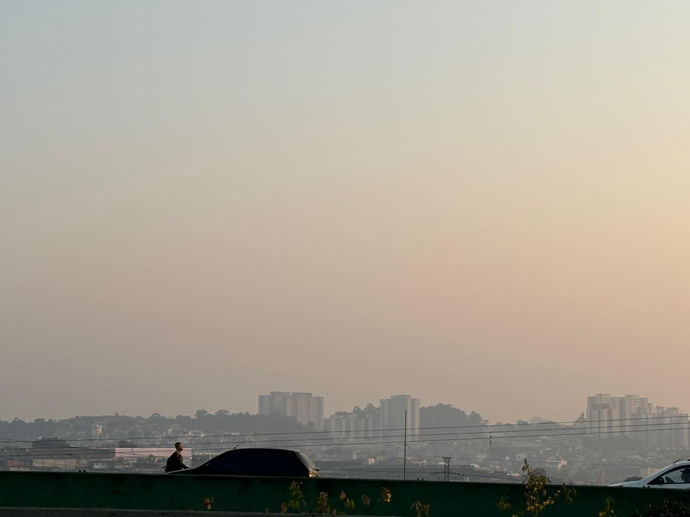

São Paulo: Cidade amanhece com o ar mais poluído do mundo
A cidade de São Paulo iniciou esta quarta-feira (11) registrando a pior qualidade do ar da semana, segundo as medições da Companhia Ambiental do Estado (Cetesb). Às 9h, o monitoramento apontava que o ar estavam com qualidade "muito ruim" em 10 estações espalhadas pela capital, enquanto que nas outras quatro, a classificação era "ruim". No mesmo horário, na segunda-feira (9), eram seis estações com índice "muito ruim", seis com "ruim" e uma com "moderado" — a do Capão Redondo não fez medição às 9h daquele dia.
Fonte:G1
Noticia 2
noticia